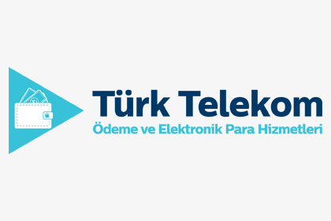
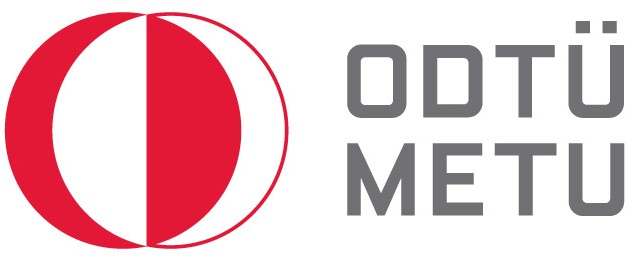

Faruk KİBİROĞLU
Türk Telekom Payment Services
Risk Management & Business Continuity Specialist
April 2020 - Currently working
Gathering information about the company’s outgoings, legal responsibilities and business activities. Also in charge of evaluating any potential future risks to the company’s operations. Proactively managing financial, regulatory and operational risks.
Describing and estimating the risks affecting the business.
Conducting detailed risk assessments by analyzing documents, statistics, and reports.
Classifying, evaluating, and monitoring the company’s risk.
Implementing strategies to minimize the exposure to any risk.
Carrying out audits and assessments,
Understanding of current Risk management tools and techniques (SWOT, Root cause analysis, probability and impact matrix etc.)
Evaluating the adequacy of the action plans determined for the elimination of incompatibilities or checking on the spot,
To review and update the risk analysis and risk management methodology.
EDUCATION
ISTANBUL UNIVERSITY
OPEN AND DISTANCE EDUCATION FACULTY
COMPUTER PROGRAMMING
2022 - 2024
MIDDLE EAST TECHNICAL UNIVERSITY
FACULTY OF ECONOMIC AND ADMINISTRATIVE SCIENCES
POLITICAL SCIENCE AND PUBLIC ADMINISTRATION
2010 - 2014
MARMARA UNIVERSITY
SOCIAL SCIENCES COLLEGE
LOCAL GOVERNMENTS
2008 - 2010
EXPERIENCE
BNP Paribas Cardif
Operational Compliance Senior Associate
November 2018 - April 2020
Reviewing and updating policies and procedures so that they meet the compliance program requirements. In addition, proactively taking actions in terms of know your customer regulations.
Making sure that issues identified through the monitoring process are properly documented and tracked to conclusion,
Reviewing existing compliance activities and making recommendations to improve them,
Writing reports for the management team in respect of compliance and audits issues,
Directing compliance issues to appropriate departments for investigation and resolution,
Monitoring know your customer policies and procedures,
Managing the reports presented to France Head Office,
Determining customers’ risk levels
Turkcell Global Bilgi
Roaming Specialist
July 2016 - July 2018
Collection Management:
Corporate collection only with overseas corporate operators, taking overdue
payments, managing Bad Debt, forecasting next Bad Debt amount,
distributing the payment correctly.
Reconciliation:
Matching Turkcell's open items with related operator's open items, solving if there
is any conflict by contacting related departments and operator.
Risks of Operators:
Analyzing operators and prioritization of them according to their risk level.
Disputed Invoices:
Checking the invoices if there is disputed ones, if there is one solving the problem
by contacting related departments and operator.
In addition to these, preparing ad hoc reports and analysis if needed.
Customer Management Center
Internal Audit Assistant Specialist
September 2014 - April 2016
Contract Management and Audit:
Following all the contracts of
customers and vendors, warning related managers in contract renewal
period, coordination between related departments/operations and legal
opinion in the contract/additional protocol process. Moreover, performing
contractual audit whether service level agreements are met. Preparing
monthly, quarterly and yearly audit plan and executing them.
Management Systems:
Being included in documentation process in terms of ISO 9001 Quality Management System.
Executing internal audit and clean desk policy in the aspect of ISO 27001 Information Security
Management System. Managing corrective and preventive actions in order
for unsuitability to resolve. Planning and executing vendor audit. Creating
asset inventory, determining risk level within risk appetite decided by top
management.
In addition to these, I am experienced in process management by drawing
the processes in QPR Process Designer. After drawing the processes, I
examined them and solved the problems about the processes.